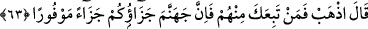
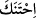

Onu emniyete mahzar olmuş bir nur gören, secde etti.
Oğul, sen Kur’an’ın dış yüzüne/zâhirine bakma…
Şeytan da Âdem’i topraktan ibaret gördü, hakikatine eremedi!
“Yemin ederim ki, eğer beni” insanları aldatma ve sapıklığa düşürme sıfatıyla
“kıyâmete kadar yaşatırsan” yâni benim ölümümü, vaad ettiğin gibi te’hir edersen,
Allah’ın kendilerini koruduğu ihlaslı olan “pek azı dışında, onun neslini kendime
bağlayacağım!” dedi.” Onun evladlarına ve zürriyetine hâkim gelip iğvâ ile azdırarak
onlara üstün geleceğim. Nitekim İblis şöyle demiştir: “Senin izzet ve şerefine and
olsun ki, onların tümünü azdıracağım.” (Sâd, 38/82) “Kendime bağlayacağım” diye
ifâde edilen ‘ ’ fiilinin bir diğer mânâsı da kökünü kazımaktır. Buna göre mânâ
şöyle olur: ‘Azdırarak onların kökünü kazıyacağım.’ Yâni iğvâ ile/azdırarak Âdem’in
oğullarının köklerini kazıyayım ki senin azâbına lâyık ve vâsıl olsunlar. Çekirgeler
topraktaki yiyecek her şeyi silip süpürdüğü zaman Araplar bu fiili kullanırlar ve:
“Çekirgeler toprağın kökünü kazıdı” derler.
el-Es’iletü’l-mukhime’de der ki: “İblis insanlarda şehvetlerin terkîb edilmiş olduğunu
ve bu şehvetlerin onların haktan bâtıla meyletmesinin sebebi olduğunu biliyordu. Bunu
da babaları Âdem’in şehvet ile ağaçtan yemeye meyletmesine kıyâs ederek bilmişti.” Bu
hususta başka şeyler de söylenmiştir.
63. Allah buyurdu: “Git! Onlardan kim sana uyarsa, iyi bilin ki hepinizin cezası
cehennemdir. Tam bir ceza!”
“Allah buyurdu: “Git!” aldatarak ve saptırarak kötü yolun istikâmetinde git. Bahru’l-
ulûm’da der ki: “Burada gitmekten maksad, gelmenin zıddı olan gitmek değildir,
‘kasdettiğin şeye devam et’ demektir. Ya da onu kovmak, İblis’i nefsine hoş gelen şeyle
başbaşa bırakmaktır. Ya da git ifâdesi onu küçümseme ve tehdit yollu söylenmiş bir
sözdür. Sözünü dinlemeyen kimseye: “Git ve nefsin için tercih ettiğin hal üzere ol”
denir. Kâşifî der ki: “Bu ‘git’ emri, horlamak ve uzaklaştırmak içindir. Yâni şeytanı
yakınlık/kurb dergâhından sürdüler. Cenâb-ı Hak ona: “Senin için mühim olan ne ise
onun izinden git” buyurdu.”
“Onlardan kim” dalâlet husûsunda “sana uyarsa,” Kâşifî der ki: ‘senin emrini
dinlerse’ “iyi bilin ki hepinizin” senin de onların da “cezası cehennemdir. Tam bir
cezâ!” Yâni mükemmel bir şekilde cezâlandırılacaksınız. Kâşifî der ki: “Tam bir cezâ,
yâni devamlı bir azâb!”